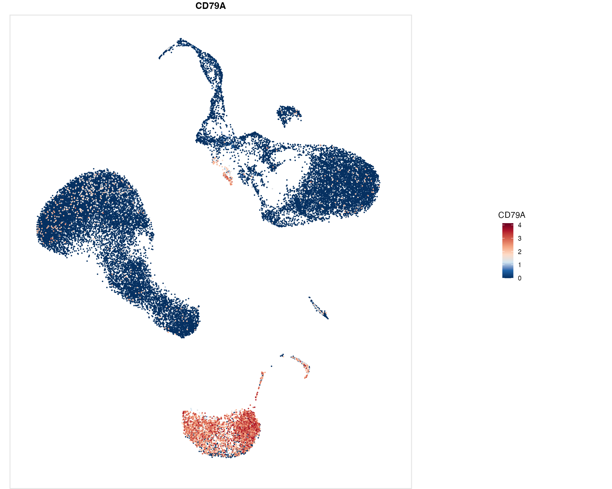
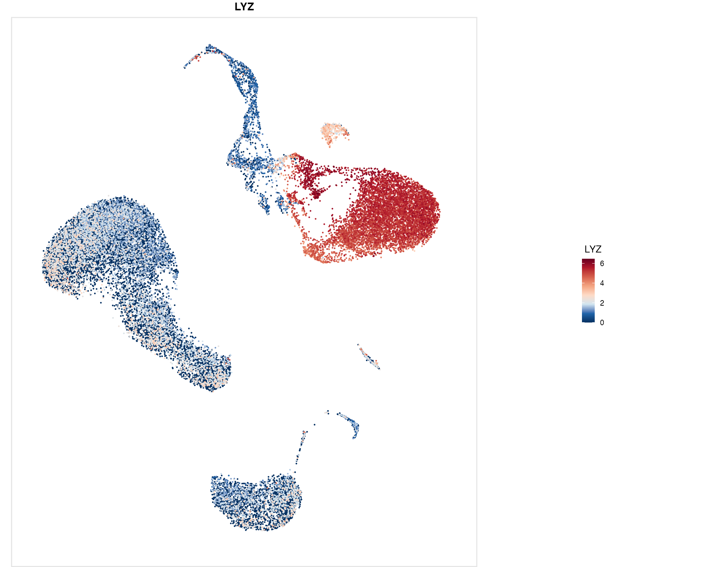
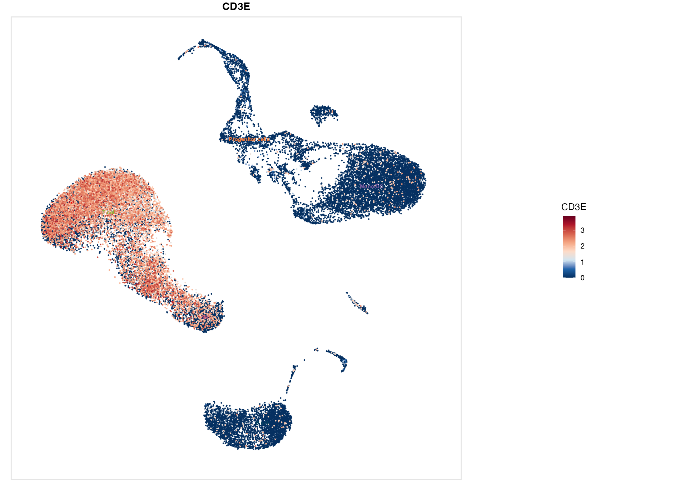
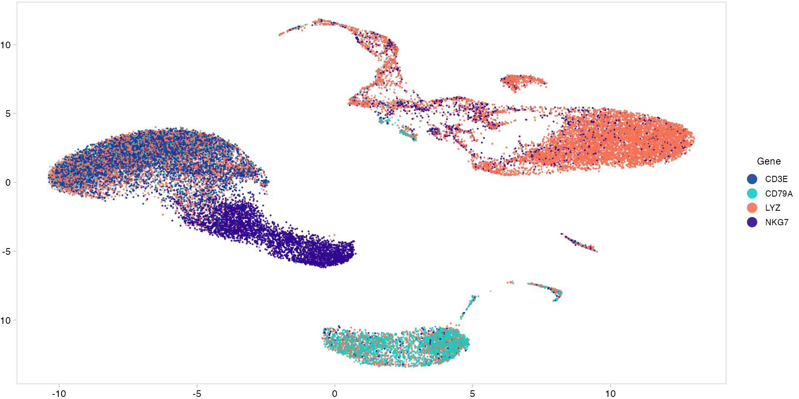
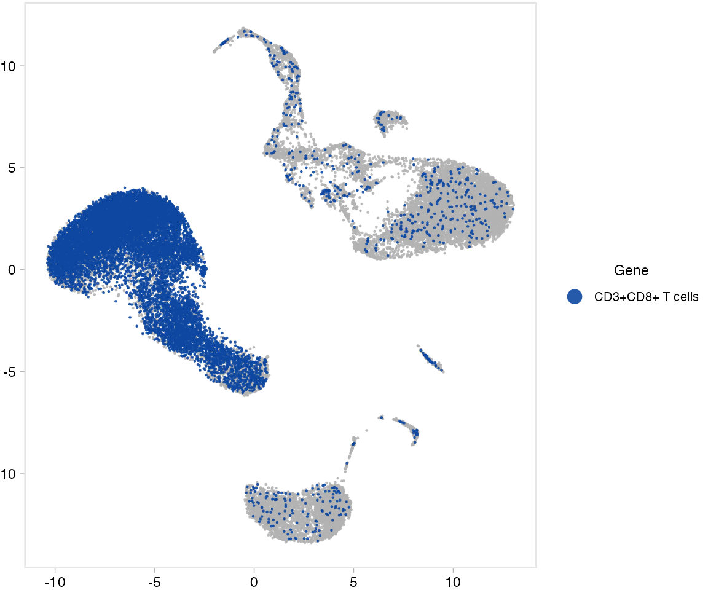
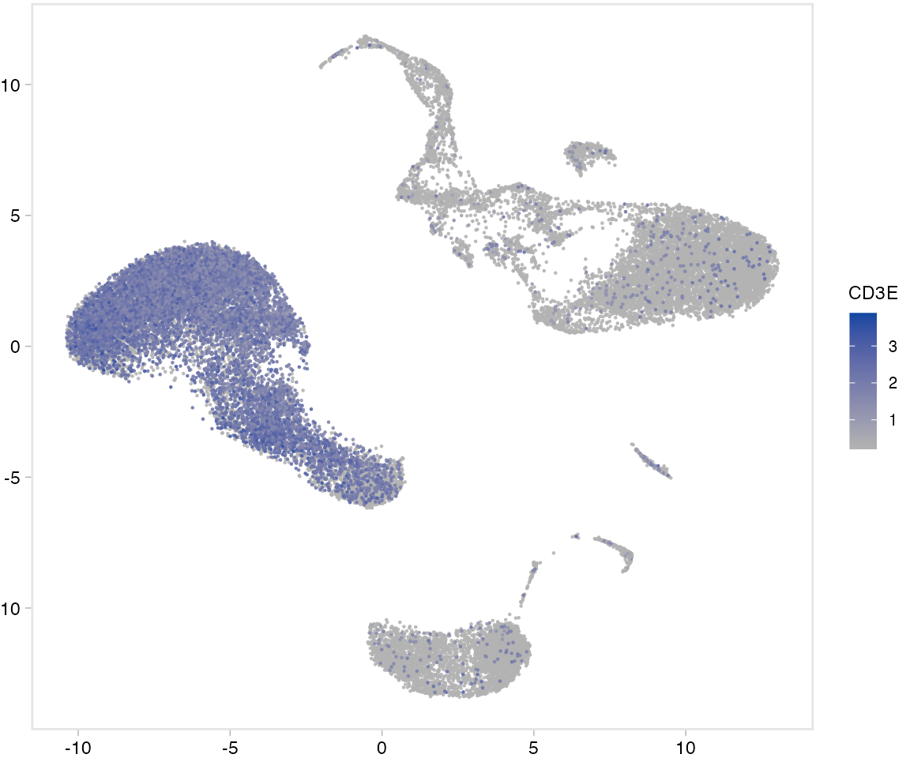

scSidekick - Feature Expression: PlotFeaturePlots & PlotMultiFeature
04_feature_expression.RmdOverview
Two functions for visualizing gene expression on UMAP (or any reduction):
-
PlotFeaturePlots()- one panel per gene × split group. Saves to disk by convention; aliasGenerateFeatureMaps(). -
PlotMultiFeature()- co-expression of several genes on a single panel (gene mode, intersection mode, or continuous scale mode).
PlotFeaturePlots
2. Multiple genes - one row per gene
PlotFeaturePlots(bmcite,
features = c("CD3E", "CD79A", "LYZ"))

3. Split by donor - one column per donor
split.by creates one column per level. Combined with
multiple features, this produces a gene × donor grid.
Pain point fixed. Seurat’s
FeaturePlot(..., split.by =)renders the panels with no colour legend at all - you can’t tell what the colours mean, and the common& RestoreLegend()workaround attaches a guide that doesn’t match the data.PlotFeaturePlots()keeps one shared, accurate colour scale across every panel, so expression is directly comparable across conditions.
PlotFeaturePlots(bmcite,
features = c("CD3E", "NKG7", "CD79A"),
split.by = "donor")4. Cluster labels overlay
label = TRUE prints cell-type labels at cluster
centroids, so you can immediately connect expression hotspots to their
identity.
PlotFeaturePlots(bmcite,
features = c("CD3E", "CD79A"),
label = TRUE,
label.by = "celltype.l1")
5. Multiple split.by - iterate automatically
Passing a vector to split.by generates one complete
figure per split variable.
PlotFeaturePlots(bmcite,
features = c("CD3E", "NKG7", "CD79A"),
split.by = c("lane"),row.by = "donor",layout_method = "metadata")
PlotMultiFeature
Mode 1 - Gene mode (default)
Each gene gets a distinct color. Cells expressing a gene above
threshold are colored accordingly; cells expressing more
than one gene get a blended color. A single UMAP panel shows all
lineages at once.
PlotMultiFeature(bmcite,
features = c("CD3E", "CD79A", "LYZ", "NKG7") )
Mode 2 - Intersection mode
Highlights only cells that co-express all listed genes above the cutoff. Useful for identifying rare dual-positive populations.
PlotMultiFeature(bmcite,
features = c("CD3E", "CD8A"),
plot_mode = "intersection",
pct_cutoff = 0.5,
intersection_label = "CD3+CD8+ T cells")
Mode 3 - Scale mode
Plots a single gene (or averaged signature) as a continuous gradient.
Equivalent to FeaturePlot() but integrated with the
scSidekick saving pipeline.
PlotMultiFeature(bmcite,
features = "CD3E",
plot_mode = "scale")
Parameter reference - PlotFeaturePlots
| Parameter | Type | Default | Description |
|---|---|---|---|
features |
character vector | required | Genes to plot |
split.by |
character (vector) | NULL |
Variable(s) for column splitting |
label |
logical | FALSE |
Add group labels at centroids |
label_by |
character | NULL |
Metadata column for centroid labels |
output_dir |
character | NULL |
Directory for saving |
object_name |
character | "" |
Label used in filenames |
subset_name |
character | "" |
Sub-label used in filenames |
Parameter reference - PlotMultiFeature
| Parameter | Type | Default | Description |
|---|---|---|---|
features |
character vector | required | Genes to co-visualize |
plot_mode |
character | "gene" |
"gene", "intersection", or
"scale"
|
colors |
character vector | NULL |
Colors per gene (gene mode) |
threshold |
numeric | 0.0125 |
Min expression to count a cell as “expressing” |
pct_cutoff |
numeric | 0.3 |
Co-expression cutoff (intersection mode) |
intersection_label |
character | NULL |
Label for co-expressing population |
output_dir |
character | NULL |
Directory for saving |
See also
- Vignette 03:
PlotDimPlots- cell-type UMAP without expression overlay - Vignette 05:
GroupHeatmap,FastDotPlot- expression across clusters - Vignette 07:
PlotSpatialFeaturePlots- same concept for spatial data
Session info
## R version 4.3.1 (2023-06-16)
## Platform: aarch64-apple-darwin20 (64-bit)
## Running under: macOS 15.6
##
## Matrix products: default
## BLAS: /Library/Frameworks/R.framework/Versions/4.3-arm64/Resources/lib/libRblas.0.dylib
## LAPACK: /Library/Frameworks/R.framework/Versions/4.3-arm64/Resources/lib/libRlapack.dylib; LAPACK version 3.11.0
##
## locale:
## [1] en_US.UTF-8/en_US.UTF-8/en_US.UTF-8/C/en_US.UTF-8/en_US.UTF-8
##
## time zone: America/Chicago
## tzcode source: internal
##
## attached base packages:
## [1] stats graphics grDevices utils datasets methods base
##
## other attached packages:
## [1] dplyr_1.1.4 stxBrain.SeuratData_0.1.2
## [3] pbmc3k.SeuratData_3.1.4 ifnb.SeuratData_3.1.0
## [5] bmcite.SeuratData_0.3.0 SeuratData_0.2.2
## [7] Seurat_5.2.1 SeuratObject_5.1.0
## [9] sp_2.1-3 scSidekick_0.1.0
##
## loaded via a namespace (and not attached):
## [1] RColorBrewer_1.1-3 rstudioapi_0.16.0 jsonlite_2.0.0
## [4] magrittr_2.0.3 spatstat.utils_3.1-0 farver_2.1.2
## [7] rmarkdown_2.29 fs_1.6.6 ragg_1.4.0
## [10] vctrs_0.6.5 ROCR_1.0-11 spatstat.explore_3.2-7
## [13] rstatix_0.7.2 htmltools_0.5.8.1 broom_1.0.8
## [16] Formula_1.2-5 sass_0.4.10 sctransform_0.4.1
## [19] parallelly_1.37.1 KernSmooth_2.23-22 bslib_0.9.0
## [22] htmlwidgets_1.6.4 desc_1.4.3 ica_1.0-3
## [25] plyr_1.8.9 plotly_4.10.4 zoo_1.8-14
## [28] cachem_1.1.0 igraph_2.0.3 mime_0.13
## [31] lifecycle_1.0.4 pkgconfig_2.0.3 Matrix_1.6-5
## [34] R6_2.6.1 fastmap_1.2.0 fitdistrplus_1.1-11
## [37] future_1.33.2 shiny_1.11.1 digest_0.6.37
## [40] colorspace_2.1-1 patchwork_1.3.1 tensor_1.5
## [43] RSpectra_0.16-1 irlba_2.3.5.1 textshaping_0.3.7
## [46] ggpubr_0.6.1 labeling_0.4.3 progressr_0.14.0
## [49] spatstat.sparse_3.0-3 httr_1.4.7 polyclip_1.10-6
## [52] abind_1.4-8 compiler_4.3.1 withr_3.0.2
## [55] backports_1.5.0 carData_3.0-5 fastDummies_1.7.3
## [58] highr_0.10 ggsignif_0.6.4 MASS_7.3-60.0.1
## [61] rappdirs_0.3.3 tools_4.3.1 lmtest_0.9-40
## [64] otel_0.2.0 httpuv_1.6.16 future.apply_1.11.2
## [67] goftest_1.2-3 glue_1.8.0 nlme_3.1-164
## [70] promises_1.5.0 grid_4.3.1 Rtsne_0.17
## [73] cluster_2.1.6 reshape2_1.4.4 generics_0.1.4
## [76] gtable_0.3.6 spatstat.data_3.0-4 tidyr_1.3.1
## [79] data.table_1.15.4 car_3.1-3 spatstat.geom_3.2-9
## [82] RcppAnnoy_0.0.22 ggrepel_0.9.6 RANN_2.6.1
## [85] pillar_1.11.0 stringr_1.5.1 spam_2.10-0
## [88] RcppHNSW_0.6.0 later_1.4.2 splines_4.3.1
## [91] lattice_0.22-6 survival_3.5-8 deldir_2.0-4
## [94] tidyselect_1.2.1 miniUI_0.1.1.1 pbapply_1.7-2
## [97] knitr_1.45 gridExtra_2.3 scattermore_1.2
## [100] xfun_0.52 matrixStats_1.2.0 stringi_1.8.7
## [103] lazyeval_0.2.2 yaml_2.3.10 evaluate_0.23
## [106] codetools_0.2-20 tibble_3.3.0 cli_3.6.5
## [109] uwot_0.1.16 xtable_1.8-4 reticulate_1.35.0
## [112] systemfonts_1.0.6 jquerylib_0.1.4 dichromat_2.0-0.1
## [115] Rcpp_1.1.0 globals_0.16.3 spatstat.random_3.2-3
## [118] png_0.1-8 parallel_4.3.1 pkgdown_2.1.3
## [121] ggplot2_3.5.2 dotCall64_1.1-1 listenv_0.9.1
## [124] viridisLite_0.4.2 scales_1.4.0 ggridges_0.5.6
## [127] purrr_1.0.4 crayon_1.5.2 rlang_1.1.6
## [130] cowplot_1.2.0.9000